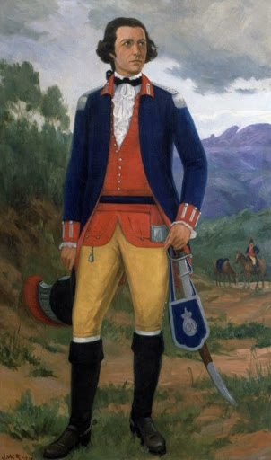

Quem foi Tiradentes
Joaquim José da Silva Xavier, também conhecido pelo apelido de “Tiradentes”, consagrou-se por sua participação ativa na Inconfidência Mineira. Tragicamente, ele foi o único dos envolvidos no movimento a receber a pena de morte, uma vez que os outros envolvidos foram perdoados pela Coroa Portuguesa.
De uma família de origem humilde, Joaquim José nasceu na Capitania de Minas Gerais, em 12 de novembro de 1746. Com a morte prematura dos pais, Joaquim José precisou exercer inúmeros trabalhos ao longo de sua vida, como a de dentista amador, função que lhe deu o apelido de “Tiradentes”. Ele também havia trabalhado na mineração, porém, foi no posto de alferes nos quadros da cavalaria imperial que Tiradentes alcançou certa estabilidade. Apesar da pouca instrução, ele era um republicano convicto e adepto dos ideais do Iluminismo."
Causas da Inconfidência Mineira
O movimento dos inconfidentes, organizado em 1788, foi consequência do contato dos colonos brasileiros com os ideais iluministas divulgados na Europa, ideais que haviam, por sua vez, inspirado o movimento de independência dos Estados Unidos.
Os historiadores atribuem a divulgação do pensamento iluminista no Brasil ao contato de estudantes brasileiros com o Iluminismo ao serem enviados por suas famílias da elite econômica da colônia para estudarem na Universidade de Coimbra, em Portugal. Além da propagação dos ideais iluministas, a Inconfidência Mineira aconteceu em consequência da insatisfação das elites da Capitania de Minas Gerais com a pesada política de cobrança de impostos estabelecida pela Coroa Portuguesa sobre os colonos.
O visconde de Barbacena havia sido nomeado pela Coroa Portuguesa como governador da capitania com o objetivo de promover a derrama, ou seja, a cobrança obrigatória dos impostos sobre a extração do ouro.
Inconfidência Mineira
A insatisfação com uma possível derrama mobilizou as elites da capitania contra o domínio português. Os inconfidentes planejavam assassinar o governador da capitania e proclamar o republicanismo na Capitania de Minas Gerais. Tiradentes era um dos envolvidos na conspiração, pois, além de ser um defensor dos ideais iluministas, também havia sido prejudicado pela gestão do visconde de Barbacena ao ser destituído do comando da cavalaria, que fiscalizava uma importante estrada da região.
O movimento conspirado pelas elites mineradoras, entretanto, não chegou a acontecer. Todos os envolvidos foram denunciados por Joaquim Silvério dos Reis, que optou por denunciar o movimento para se livrar das dívidas pessoais que havia adquirido com a Coroa Portuguesa. Assim, em 1789, o visconde de Barbacena suspendeu a derrama e prendeu os envolvidos na conspiração – entre eles, Tiradentes.